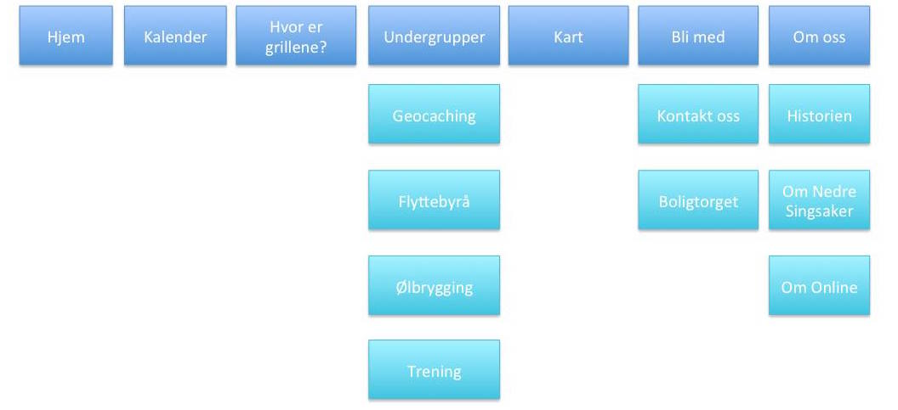

Administrative Details
Klient: Fikti V. Person, Markedsdirektør i Nedre OnlineslettePurpose, goals, and audience
Mål, mening, målgruppe. Hent fra forrige innlevering.Mål
Målet for nettsiden er å gi informasjon til beboerne på Nedre Onlineslette. Her skal de kunne finne informasjon om forkjellige ting de har interesse av. For eksempel avstand til vaskeriet eller hvor grillene er for øyeblikket.Nettsiden vil gjøre det mulig for brukerne å finne informasjonen de søker. De kan også be om informasjon om de ønsker det.Brukere
Målgruppen for nettsiden er beboere på Nedre Onlineslette, og eventuelle andre som ønsker å flytte dit. Behovet brukerne har for informasjon er å vite når vaskemaskinene er ledige på vaskeriet, når butikken stenger, hvor langt det er til nærmeste treningssenter eller hvem som arrangerer neste vors.Navigation Structure
Navigasjonsstrukturen til siden vil være basert rundt en nav-bar på toppen av siden.Dette vil gjøre webområdet mer oversiktlig, ettersom at brukeren alltid har med seg navigasjonsbaren ned siden. Selve webområdet vil være i en hypertekst-struktur som består av linker til andre deler av nettsiden eller webområdet. Vi vil også ha en Site-map slik at brukere skal kunne finne fram på webområdet om de "går seg bort" på området.
Page Layout and Appearance
description of design decisions that are universal to your site:Fonts (types and sizes)
Paragrafer: 14
H1: 24
H2: 20
H3: 16
Color scheme (text, background, links, shadows, borders)
Navbar position in the page and its appearance
Banner
Footer
Social icons bar
Background images
Tekst-type skal være Open Sans, Georiga eller Sans-serif, hvor de to sistnevnte er reserve-fonter om nettleseren ikke gjenkjenner primærfonten. Tekststørrelse er som følger:
Lenker skal være svart både før og etter at linken er besøkt. Når man legger musepekeren over skal den ha en understrek
Tekst skal ha en klassisk svart farge
Bakgrunnen til siden er #CCE1F2 for sidebakgrunn og hvit bagrunn for tekst og innhold på siden
Vi velger ikke å ha kanter på nettsiden, ettersom at det ikke vil passe med fargene og layout på siden, vi velger heller ikke å ha noen skygger på webområdet
Navbar skal ligge horisontalt på toppen av siden. Den skal være i en "Fixed" posisjon.
Navbaren skal være gjennomsiktig svart. Når man beveger musepekeren over vil fargen endres til solid svart
Banneret til webområdet består av navnet til klient: Nedre Onlineslette i svarte bokstaver
Footeren består av en egenprodusert logo, samt firmanavn
Det vil være et ikon med link til Facebook-siden til Nedre Onlineslette under "kontakt oss"-siden
Ettersom at vi har ensfarget bakgrunnsinformasjon, skal det ikke være bakgrunnsbilder på nettsiden
I alt skal det være et minimalistisk utseende. Det skal ikke være noe distraherende på webområdet annet enn det klienten har bestilt
Content
Denne delen beskriver hvordan hver enkel nettside skal se ut, samt et mock-up bilde som
Hjem
Dette er forsiden. Her skal det stå om nettstedet og nedre Onlineslette generelt. Det skal også ligge en dagens Giphy
Kalender
En Google-kalender hvor arrangement i regi av nedre Onlineslette vises. Dette kan være handleturer, vors, trening, hybel til hybel osv.
Hvor er grillene?
Informasjon om hvem av medlemene som oppbevarer grillene
Undergrupper
Denne siden skal peke til flere sider om de forskjellige undergruppene. Disse er Geocaching, trening, flyttebyrå og ølbrygging
Kart
Denne siden skal gi informasjon om hvem som bor hvor, hvor Bunnpris, treningssenterert og vaskeriet ligger
Bli med
På denne siden skal det beskrives hvordan man kan bi medlem av nedre Onlineslette. Denne siden skal også peke videre til kontaktinformasjon og SiT's Boligtorg
Om oss
Denne siden skal gi informasjon om hvem som står bak nettsiden. Her skal man kunne klikke seg videre til historien bak nedre Onlineslette, lese om nedre Singsaker og om Online generelt
longest section of document for every page, text description of the content of the page as well as an image of the mockup ofthe page text describes goals this page fulfills, how design decisions specific to it contribute into fulfilling such goalsMinimum Requirements
JavaScript-Applications:
Dropdown-meny
Giphy-API
Endring av bildestørrelse
Form-validation